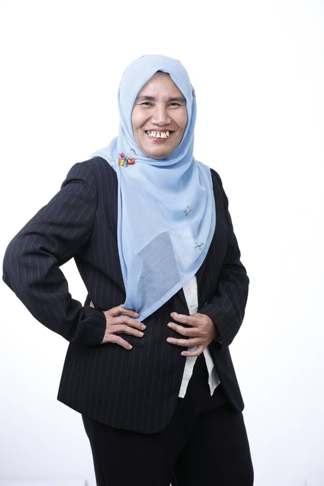
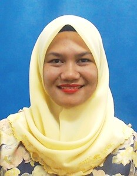
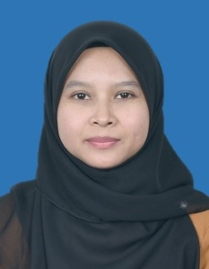
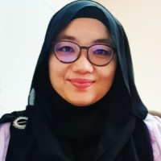

01
Environmental Research
Understanding ecosystems, natural resources, biodiversity and environmental change through field-based and applied research.
UTM Group brings together researchers working across environmental, social and applied research to generate knowledge, support communities and inform sustainable decision-making.
Our work can be organised around key themes that connect scientific evidence, people and practical outcomes.
Understanding ecosystems, natural resources, biodiversity and environmental change through field-based and applied research.
Examining how research, development and environmental interventions affect communities, livelihoods and stakeholders.
Developing evidence-based approaches that support sustainable management, policy, planning and responsible development.
A multidisciplinary team based at Universiti Teknologi Malaysia.

Research profile and biography can be added here.

Research profile and biography can be added here.

Research profile and biography can be added here.

Research profile and biography can be added here.
Add your active and completed research projects, funding details, partners and project outputs here.
Project description, objectives, study area and expected outcomes.
Research on communities, stakeholders, livelihoods and social dimensions of development.
Summary of a completed project, key findings and resulting publications or reports.
Replace these placeholders with your journal articles, conference papers, reports, books and chapters.
Author list · Journal / Conference · DOI or publication details
Author list · Journal / Conference · DOI or publication details
Author list · Journal / Conference · DOI or publication details
Showcase universities, government agencies, industry partners and international research networks.
For research collaboration, project enquiries, publications, student opportunities or other academic matters, get in touch with the UTM Group.